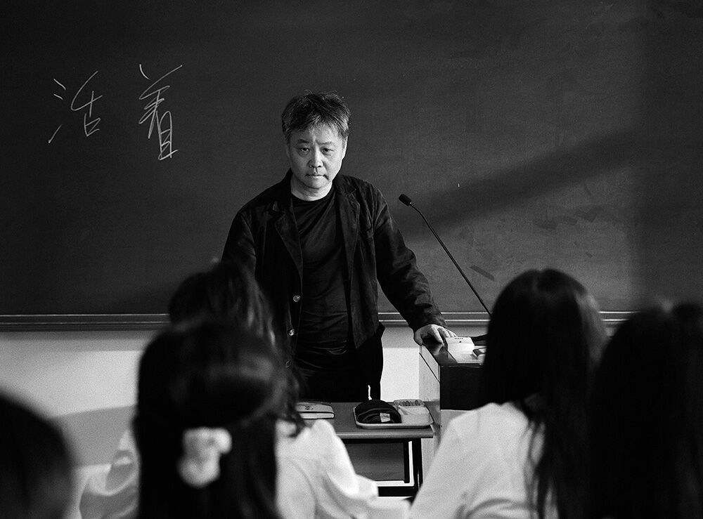
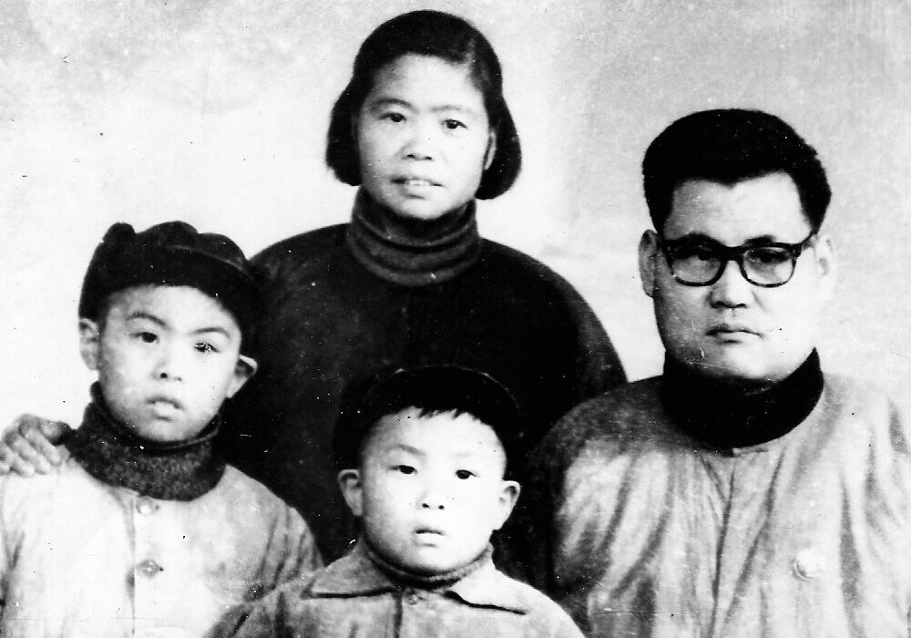
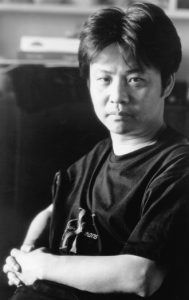
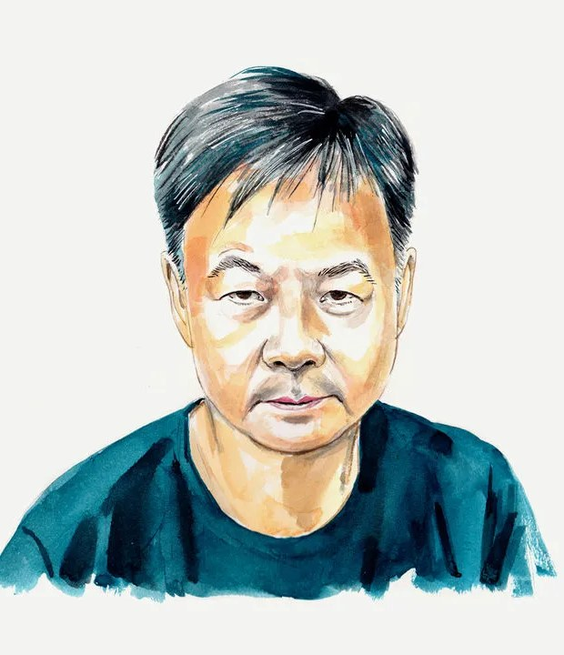

余華 · Yu Hua · 1960~
영안실 옆에서 자란 아이가 있었습니다.
다섯 해 동안 남의 이를 뽑다가,
그 일이 싫어서 소설을 쓰기 시작했습니다.
지금 그의 책은 40개가 넘는 언어로 번역되어 읽히고 있습니다.

위화 작가의 여러 인터뷰와 AI의 도움으로 『원청』 작가에 대한 내용들을 정리해 봤습니다. 어색한 문장들은 조금 바로잡아 봤지만, 여전히 AI가 쓴 어투가 남아 있긴 하네요.
위화의 부모는 둘 다 병원에서 일했고, 가족은 병원 관사에 살았다고 합니다. 아버지의 수술실은 태평간(太平間), 그러니까 영안실에서 멀지 않았고, 그와 형은 그 영안실 안을 아무렇지 않게 들락거리며 자랐다고 합니다.
우리는 병원 관사에 살았습니다.
— 위화, 인터뷰 중
영안실이 우리 앞에 있었지요.
나는 사실상 곡소리 속에서 자랐습니다.
Helen Finken, 「EAA Interview with Yu Hua, author of To Live (Huo Zhe)」, Education About Asia, Vol. 8, No. 3 (Winter 2003), p. 20~
심지어 영안실에서 낮잠을 잤다고도 합니다.
영안실은 깨끗하고 서늘했습니다.
한번은 거기서 낮잠을 자보았지요.
아이라 겁이 없었고, 그 시절엔
미신이 없어 귀신을 믿지 않았으니
금세 잠이 들었습니다.太平間乾淨涼快，有次我試著去睡午覺。小孩膽子大，那個時代沒封建迷信，不信鬼神，很快就睡著了。
中國作家網에 실린 2022년 강연·인터뷰 「文學、時代和我的寫作」

이 겁 없는 위화에게 영안실의 경험은 어떻게 소화되었을까요?
죽은 이의 가족들이
다음 날 화장을 기다리며
내 창문 앞 영안실에서
밤을 지새웠습니다.
한밤중에 울음소리에
불쑥 깨는 날이 많았지요.세상의 온갖 울음을
— 같은 인터뷰
다 들었다고 해도 좋을 겁니다.
온갖 종류의 울음을요.
얼마쯤 지나자 그것은
더 이상 우는 소리로 들리지 않았습니다.
특히 새벽이 오면,
그 울음이 통곡으로 바뀌었습니다.
그것이 나를 깊이 흔들었습니다.
『원청』의 서문에 '공명(共鳴)'이라는 단어가 나와서 반가웠다. 내가 좋아하는 단어이기도 한데, 함께 울어주거나, 대신 울어 줄 수 있는 이들은 친구가 되곤 하더라. 『원청』이라는 소설에는 수많은 죽음이 나온다고 하던데, 위화는 그 수많은 죽음 이후에도 남겨져 살아가는 이들을 위해, 여태 글을 쓰고 있는 것일지도 모르겠습니다.
중국의 '문화대혁명'은 1966년에 시작해 1976년까지 진행되었습니다. 위화의 나이로는 여섯 살에서 열여섯 살 — 유년과 소년기 전부를 이 격변기 속에서 보낸 것이지요. 의사이자 엘리트였던 아버지는 한때 공개적으로 망신을 당했다고 합니다. 문화대혁명 시기에 '의사'들에 대한 취급은 가히 좋았을 리 없겠지요. 위화가 의사의 자녀였으니 유복하게 자랐겠다고 쉽게 판단했다면, 이는 아마도 오해할 수밖에 없겠지요.
그의 어린 시절의 동네 벽은 대자보로 가득 덮여 있었다고 합니다. 책이 귀하던 시절, 그 대자보가 그의 읽을거리였고, 정치 구호보다는 그 안에 박힌 사람들의 사연과 고발에 끌렸다고 그는 회고합니다. 1979년, 안과의사에게 빌린 도스토옙스키의 『죄와 벌』이 그가 처음으로 진지하게 읽은 문학작품이었다고 합니다. 하룻밤 만에 다 읽었고, 읽는 내내 가슴이 떨렸다고 합니다. (언젠가 도스토옙스키의 작품도 함께 낭독해 보고 싶습니다.)
대학 입시에 두 번 떨어졌고, 세 번째 해에는 시험 과목에 영어가 들어가 당시에 진학을 포기했다고 합니다. 1978년 3월, 그는 국가가 배치한 자리로 갑니다. 하이옌현의 위생원, 이를 뽑는 일이었습니다. 환자는 대부분 농민이었습니다. 그 일을 다섯 해 동안 했다고 합니다. 때로 작가 소개에 '치과의사'나 '치위생사'로 경력이 소개되곤 하던데, 그저 '발치(拔齒)하는 사람'이라고 건조하게 표현하는 것이 더 오해를 부르지 않을 것 같습니다.
날마다 반복이었습니다.
매일 서서, 손에 기구를 들고, 쩍 벌린 입을 마주했지요.
기분은 가라앉았고 앞날이 온통 잿빛으로 느껴졌습니다.
영어 인터뷰에서는 더 짧게 말했습니다. "아, 정말 싫었습니다." 그리고 이런 말도 남겼습니다. "이를 뽑는 데 그리 많이 알 필요는 없습니다." 아마 전문적인 훈련을 받은 의사를 내쫓고 간단한 위생교육만 받은 이들에게 일을 시킨, 문화대혁명을 거쳐온 중국에 대한 조소일지도 모르겠습니다.
그가 창밖으로 늘 보던 사람들이 있었습니다. 문화관(文化館) 직원들이었다고 합니다. 대낮에 거리를 어슬렁거리기만 하는 것 같아 어느 날 물었습니다. 당신들은 일을 안 하냐고. 돌아온 대답이 그의 인생을 바꿉니다.
"이렇게 나와 있는 게 우리 일이오."
그 순간 그는 생각했습니다. 저게 바로 내 일이다. 문화관에 들어가려면 글을 몇 편 발표해야 했습니다. 그래서 소설을 쓰기로 했다지요.
문학에의 소명 같은 것이 아니었고, 치과에서 탈출하기 위해서였다고 위화는 후에 고백합니다. 이 솔직한, 자기를 미화하지 않는 작가가 조금씩 더 좋아지고 있습니다. 물론 처음부터 글을 잘 썼을 리 없지요. 시작은 누구에게나 그렇듯 형편없었다고 합니다. 이십대 초반, 스물한둘이던 그는 문단을 어디서 나누는지, 따옴표를 어디에 찍는지도 거의 몰랐다고 합니다. (쉰을 바라보는 저도 여전히 모르겠습니다만…) 밤에만 썼고, 두 발은 감각이 없고 왼손은 얼어붙었다고 회고합니다.

1983년, 잡지 《서호(西湖)》에 단편 「첫 번째 기숙사」가 실립니다. 그의 첫 발표작입니다. 이듬해 무렵 문화관으로 옮겨 갑니다. 계획대로 된 것입니다. (탈출에 성공한 젊은 위화에게 박수를 보내주고 싶네요.)
그러나 그를 작가로 만든 해는 1987년입니다. 「열여덟 살에 집을 나서 먼 길을 가다」를 비롯한 작품들이 쏟아졌고, 일부 평론가는 이 해를 중국 당대문학(當代文學 · 중국의 현대문학)사의 "위화의 해(余華年)"라 부른다고 합니다. 평론가 리퉈는 그에게 "너는 이미 중국 당대문학의 최전선에 도달했다"고 말했다고 하지요. 쑤퉁·거페이 같은 이들과 함께 선봉파(先鋒派)로 묶이던 시기라고 합니다. 폭력과 죽음과 피를 무표정하게 응시하는 소설들 — 한 논문은 이 시기를 "피가 뚝뚝 흐르는 소설"이라 표현한답니다. 거의 모든 인물이 비정상적으로 죽습니다. (정상적인 죽음 같은 게 어디 있겠습니까…… 허나 정말 주변 사람들이 받아들이기 힘든 죽음들이 있지요.)
그가 자기 스승으로 꼽는 두 사람이 있다고 합니다. 역할이 정확히 나뉘어져 있네요.
가와바타 야스나리는
내게 어떻게 섬세하게 묘사하는지를 가르쳤고,
카프카는 글쓰기의 정수를 배우게 했습니다.川端康成教會了我如何細緻地描述，卡夫卡讓我學到了寫作的精髓。
"나의 첫 번째 진짜 스승"이라고 언급한 가와바타 야스나리는 『설국』의 작가이자, 일본인으로는 처음으로 노벨문학상을 수상한 작가입니다. 「변신」이라는 소설로 널리 알려진 프란츠 카프카. 그의 또 다른 작품인 「시골 의사」에서 말들이 아무 데서도 아닌 곳에서 불쑥 나타나는 것을 보고 그는 소설이 그래도 된다는 것을 알았다고 합니다.
느닷없이 카프카를 만났고,
그가 내 사고를 해방시켰습니다.
— 카프카는 내게 그런 종류의 자유를 가르쳐주었습니다.
그 밖에 보르헤스, 헤밍웨이, 포크너, 그리고 루쉰 등 스승으로 언급한 작가가 많지만, 루쉰에 대해서는 이렇게 말했다고 합니다. "그가 쓴 모든 단어가 총알 같았습니다. 심장으로 곧장 날아드는 총알."
"피가 뚝뚝 흐르는 소설"을 쓰던 위화는 1990년대에 완전히 달라졌다고 합니다. 차갑던 사람이 따뜻해졌다고 합니다. 어떤 일이 있었는지는 모르지요. 단편이 아닌 장편을 쓰기 시작했다고 합니다.
달빛이 오솔길에 뿌려져 있었다,
마치 소금을 잔뜩 뿌려놓은 것처럼.月光灑在小路上，像灑滿鹽一樣。
1991년 첫 장편 『가랑비 속의 외침』, 이듬해 『인생(活着)』이 나옵니다. 『인생』은 뜻밖의 곳에서 시작되었다고 합니다. 미국 민요 〈올드 블랙 조〉. 온갖 고난을 겪고 가족을 모두 잃고도 세상을 여전히 다정하게 대하는 노예의 노래. 인생이라는 제목을 붙여놓고 그는 이런 것을 쓰고 싶어졌다고 합니다.
한 편의 작품으로서 『인생』은
한 사람과 그 자신의 운명 사이의
우정을 이야기합니다.
이것은 가장 감동적인 우정입니다.
그들은 서로 고마워하면서 동시에
서로 미워하기 때문입니다.
둘 중 누구도 상대를 버릴 수 없고,
동시에 누구도 상대를 원망할 이유가 없습니다.作為一部作品，《活著》講述了一個人和他的命運的友情，這是最為感人的友情，因為他們互相感激，同時也互相仇恨；他們誰也無法拋棄對方，同時誰也沒有理由抱怨對方。
— 『인생』 한국어판 자서, 1996. 10. 17
저는 아직 못 보았습니다만, 『인생』은 영화로도 만들어졌다고 하지요. 예고편 보기 → 우리네 인생도 이렇게 흘러가는 걸까요? 장이머우(장예모) 감독, 궁리(공리) 주연 〈인생(活着)〉, 1994.
위화는 『인생』을 나라별로 낼 때마다 다른 서문을 썼다고 합니다. 중국어판, 일본어판, 영어판, 그리고 1996년 10월 17일에 쓴 한국어판 서문이 각각 다릅니다. 그 한국어판 서문에 이 소설의 가장 유명한 문장이 들어 있습니다. (앞의 '운명과의 우정' 문장도 같은 서문에 있습니다. 이 소설에서 가장 널리 인용되는 두 문장이 모두 한국 독자를 위해 쓰인 셈입니다.)
'살아간다'는 말은
— 『인생』 한국어판 자서, 1996. 10. 17
우리 중국어에서
힘으로 가득 찬 낱말입니다.
그 힘은
외침에서 오는 것도,
공격에서 오는 것도 아니라
견딤에서 옵니다.
삶이 우리에게 지운
책임을 견디는 것,
현실이 우리에게 준
행복과 고난,
무료함과 평범함을
견디는 것.
중국어판 서문에는 또 이런 문장이 있습니다. "사람은 살아간다는 것 자체를 위해 살아가는 것이지, 살아가는 일 바깥의 그 어떤 것을 위해 살아가는 것이 아니다." 그리고 작가의 일에 대해서는 이렇게 적었습니다.
작가의 사명은
— 위화, 『인생』 중국어판 서문
분출도, 고발이나 폭로도 아니다.
그는 사람들에게
고귀함을 보여주어야 한다.

위화를 읽으면 자꾸 웃게 된다고 합니다. 그런데 그의 유머는 농담에서 오지 않습니다. 『허삼관 매혈기』의 문체를 그는 이렇게 설명했습니다.
월극(越劇) 가락으로 썼습니다. 간단한 한마디를 좀 수다스럽게 늘여서 말하는 것이지요. 일단 반복하기 시작하면 선율감이 생겨납니다.
반복이 리듬을 만들고, 리듬이 웃음을 만듭니다. 소리 내어 읽는 우리에게는 특히 중요한 이야기입니다. 위화의 문장은 눈보다 입에 맞습니다.
위화는 한국에서 특히 오래 읽혀 온 작가입니다. 1997년 『살아간다는 것』으로 처음 소개된 이래 장편과 중단편집과 산문집까지 열일곱 종이 우리말로 나왔습니다. 아래는 한국어판 출간 순서입니다. 제목을 누르면 알라딘의 해당 도서 페이지로 이어집니다.
『인생』 — 위화가 왜 위화인지 가장 짧게 알 수 있습니다. 300쪽이 조금 넘습니다.
『허삼관 매혈기』 — 함께 소리 내어 읽기에 가장 즐거운 책입니다. 반복의 리듬이 살아 있습니다.
『사람의 목소리는 빛보다 멀리 간다』 — 소설이 아니라 작가의 육성을 듣고 싶을 때.
장이머우는 문예지에 연재되던 『인생』을 읽고 판권을 얻었습니다. 1994년 칸영화제에서 심사위원대상을 받았고, 푸구이를 연기한 거유(葛優)가 남우주연상을 받았습니다. 그러나 이 영화는 중국에서 극장 상영이 금지되었습니다. 당국 승인 없이 칸에 출품했다는 이유였고, 장이머우와 궁리는 2년간 활동을 금지당했습니다.
소설과 영화는 결말이 다릅니다. 소설에서는 거의 모두가 죽고 푸구이와 늙은 소만 남지만, 영화에서는 몇 사람이 살아남습니다. 배경도 남방 농촌에서 북방 소도시로 옮겨졌고, 그림자극이 새로 들어왔습니다. 손자의 이름도 쿠건(苦根, 쓴 뿌리)에서 만터우(饅頭, 찐빵)로 바뀌었습니다. 운명의 무게를 조금 덜어낸 것입니다.
하정우가 연출하고 주연했으며 하지원이 함께했습니다. 배경을 1950~60년대 한국으로 옮겼습니다. 관객 약 96만 명. 흥행은 아쉬웠고, 원작의 '매혈기'가 가족 드라마로 줄어들었다는 평이 많았습니다.
1998년 이탈리아 그린차네 카보우르 문학상(『인생』), 2002년 제임스 조이스 재단상(중국 소설가로는 처음), 2004년 프랑스 문예공로훈장 슈발리에, 2022년 러시아 야스나야 폴랴나 문학상 외국문학 부문(『형제』). 한국에서는 흔히 모옌·옌롄커와 함께 중국 현대문학을 대표하는 세 사람으로 소개됩니다.
지난 두 시즌 동안 우리는 얄롬과 이마고를 읽으며 관계를 이론으로 공부했습니다. 이번에는 이야기 속으로 들어갑니다. 그런데 그 안내자가 하필 위화입니다.
영안실 옆에서 자란 아이. 새벽마다 창밖의 통곡에 잠을 깨던 소년. 이를 뽑기 싫어서 소설을 쓰기 시작한 청년. 그리고 마침내 "살아간다는 것의 힘은 외침이 아니라 견딤에서 온다"고 쓴 사람.
위화는 고통을 설명하지 않습니다. 그냥 옆에 놓습니다. 그러면 읽는 사람이 알아서 그 자리에 서게 됩니다. 낭독은 그 일을 특히 잘 합니다. 문장이 목을 지나 귀로 들어올 때, 우리는 이미 그 자리에 서 있습니다.
어떤 작가도 자신이 사는 시대와의 관계를 떨쳐낼 수 없습니다.
현실은 소설보다 터무니없습니다. 현실의 부조리를 소설로 옮기는 일은 어렵습니다.
— 위화
낭독모임이 시작되기 전에 위화가 쓴 책들을 정리하고, 수필이라도 몇 개 골라서 읽어봐야겠습니다.
사실 확인에 대하여 — 이 글은 위화 본인의 중국어·영어 인터뷰와 『인생』 각국어판 자서, 그리고 알라딘·교보문고·예스24의 서지 정보를 대조해 정리했습니다.
흔한 오류 두 가지 — 국내 일부 서점의 작가 소개는 영화 〈인생〉이 칸 황금종려상을 받았다고 적어 두었으나, 1994년 황금종려상은 〈펄프 픽션〉이고 〈인생〉은 심사위원대상입니다. 또 『인생』의 원제를 '人生'이나 '生活'로 적은 곳이 있는데 정확한 원제는 『活着』입니다.
남겨 두는 것 — '노벨문학상 후보'라는 표현이 자주 쓰이지만 후보 명단은 50년간 공개되지 않으므로 확인할 방법이 없습니다. 번역 언어 수와 판매 부수도 자료마다 크게 다릅니다. 이 글에서는 여러 출처가 겹치는 선에서만 적었습니다.